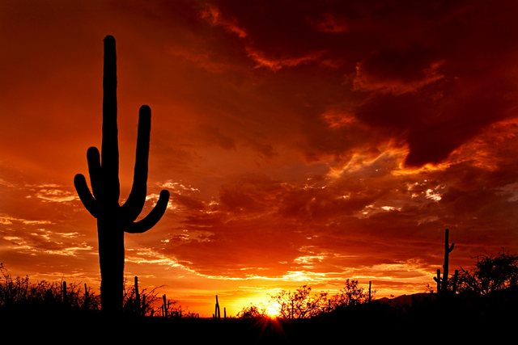
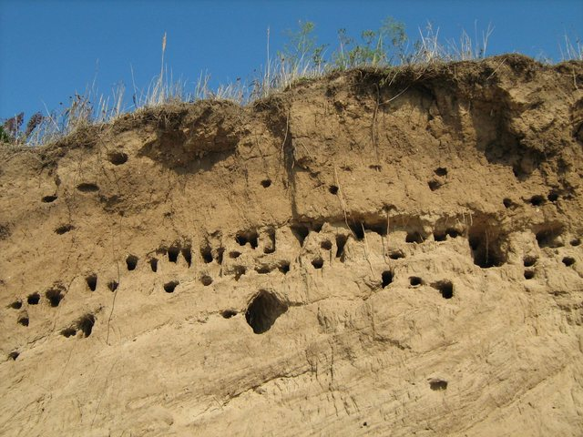
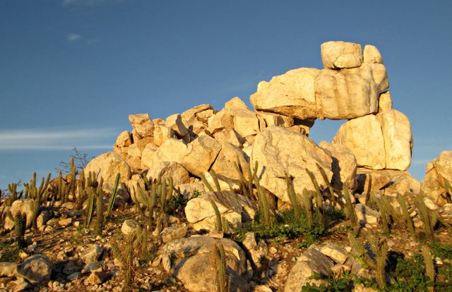
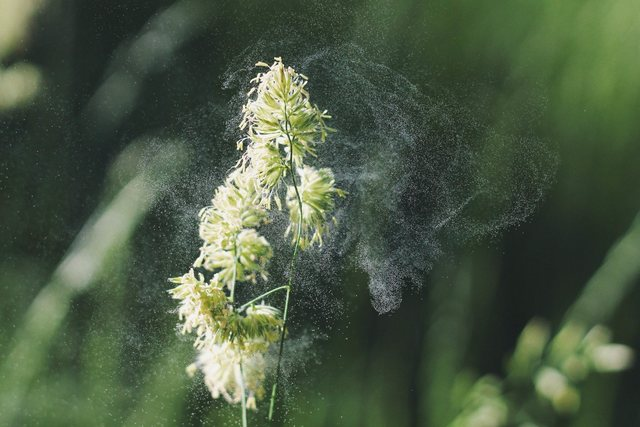
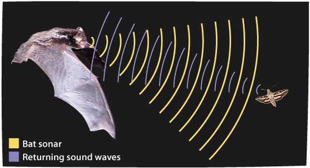

Habitat
Shelter Among Saguaros
Desert plants create shelter high above the ground.
Survival in the Sonoran Desert takes more than staying out of the sun.
Explore the traits, behaviors, and habitats that help nocturnal animals live after dark.

Desert plants create shelter high above the ground.

A burrow provides refuge from the daytime heat.

Cracks and crevices turn exposed rock into shelter.

Some flowers depend on visitors that arrive after sunset.

Sound helps bats explore a world with little light.